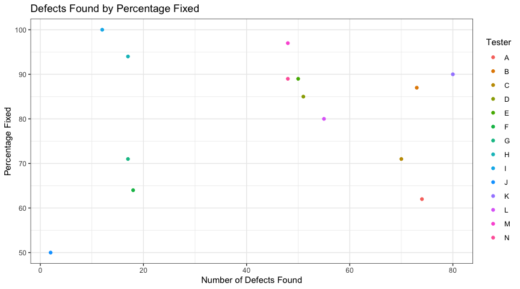
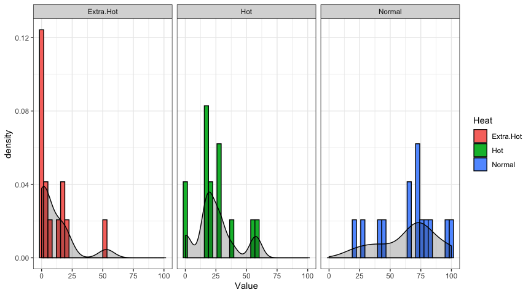
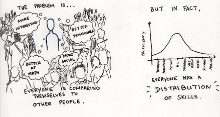
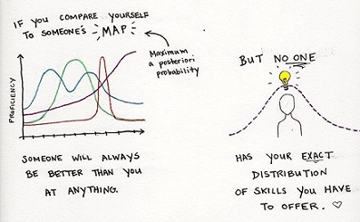
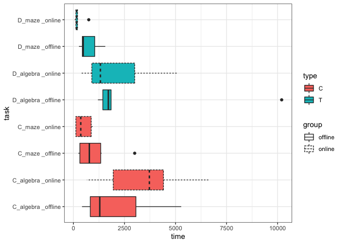
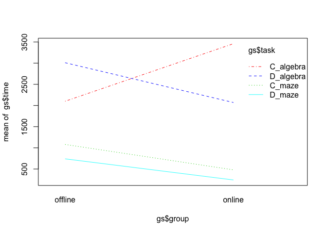
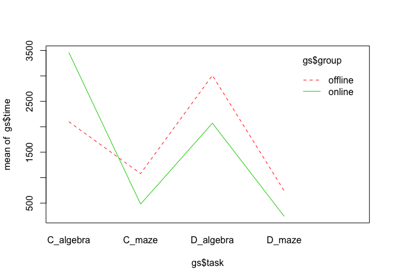

Chapter 9 Developer Performance and Designing a New Grading System for Teams
Someone wise once asked me:
“How do you choose a heart surgeon?”
“I don’t know, how?”
“You look for the surgeon with the highest failure rate who is still accepting patients”
“And why on earth would you want that?”
“Because it means that they’re getting all the hardest cases and people still trust them to do the surgery.”
This little exchange is surprisingly relevant to how we measure developer performance. Bear with me. If I were to tell you that the best developer at my company fixed the least number of bugs, what would you think? Perhaps they are fixing the really tough ones. It could also be that they simply don’t make mistakes but that is just untrue. We all make mistakes in our code and spend a lot of time debugging (novices more than experts, but also the problems get harder so there’s a lot at play!). Imagine that at the end of the workweek, everyone has to report how many bugs they fixed. One person reports fixing 78 and another person reports fixing 2. Who is the better developer?
Maybe you have some theories, or some immediate reactions. Perhaps you have some explanations of why that’s not enough information. This is great practice for figuring out how to measure a concept like performance.
One way to measure performance is to look at “number of faults found” in software testing. Finding and fixing faults may be a reasonable way to determine if developers can identify a problem and implement solutions to help software behave as expected. Reasonable enough, right? Hopefully you’re learning that when we measure anything, we have tooperationalize it in a reasonable way, taking into account prior research and interpreting results with our nuanced operationaliztion in mind. “Performance” is not necessarily captured entirely by “number of faults found” but it is totally reasonable to start somewhere. We take a look at data provided from Iivonen’s Identifying and Characterizing Highly Performing Testers–A Case Study in Three Software Product Companies
http://www.knosof.co.uk/ESEUR/ESEUR-draft.pdf pg 52
9.1 How do developers differ in their measurable output performance?
library(knitr)
data <- read.csv("data/performance_dev.csv")
#just adding in a check on the percentages, we see some off-by-ones but that's probably due to rounding
data$Totals <- data$Fixed + data$No.Fix +data$Duplicate + data$Cannot.reproduce
kable(data)%>%
kable_styling(bootstrap_options = c("striped", "hover"))| Tester | Defects | Extra.Hot | Hot | Normal | Status.Open | Fixed | No.Fix | Duplicate | Cannot.reproduce | Totals |
|---|---|---|---|---|---|---|---|---|---|---|
| A | 74 | 4 | 1 | 95 | 12 | 62 | 26 | 12 | 0 | 100 |
| B | 73 | 0 | 56 | 44 | 15 | 87 | 6 | 2 | 5 | 100 |
| C | 70 | 0 | 29 | 71 | 36 | 71 | 24 | 0 | 4 | 99 |
| D | 51 | 0 | 27 | 73 | 33 | 85 | 6 | 0 | 9 | 100 |
| E | 50 | 2 | 16 | 82 | 30 | 89 | 9 | 0 | 3 | 101 |
| F | 18 | 0 | 22 | 78 | 22 | 64 | 14 | 0 | 21 | 99 |
| G | 17 | 18 | 18 | 65 | 18 | 71 | 14 | 0 | 14 | 99 |
| H | 17 | 53 | 18 | 29 | 6 | 94 | 0 | 0 | 6 | 100 |
| I | 12 | 8 | 17 | 75 | 42 | 100 | 0 | 0 | 0 | 100 |
| J | 2 | 0 | 0 | 100 | 0 | 50 | 50 | 0 | 0 | 100 |
| K | 80 | 21 | 59 | 20 | 13 | 90 | 7 | 0 | 3 | 100 |
| L | 55 | 0 | 29 | 71 | 27 | 80 | 15 | 0 | 5 | 100 |
| M | 48 | 13 | 21 | 67 | 19 | 97 | 3 | 0 | 0 | 100 |
| N | 48 | 17 | 38 | 42 | 8 | 89 | 7 | 0 | 5 | 101 |
Note that everything except the first column is in percentages
9.1.1 The Measure Matters
Here we have the developer with the least defects and the developer with the most defects. Let’s play with personas a little bit:
Jesse Jordan (Tester J) found 2 defects, each self-reported as “Normal” faults. They fixed one of them, but couldn’t fix the other. The paper points out that Jesse actually resigned during the data collection period, and this is only a partial time series. We don’t know what actually happened to Jesse, or why they resigned.
data[data$Defects==min(data$Defects),]## Tester Defects Extra.Hot Hot Normal Status.Open Fixed No.Fix Duplicate
## 10 J 2 0 0 100 0 50 50 0
## Cannot.reproduce Totals
## 10 0 100Kendall Kennedy (Tester K) found 80 defects. They’re still working on 13% of the faults, but for the finished ones they fixed 90%. They weren’t able to fix 7% of those, though. They labeled the faults as primarily “Hot”, with a few “Normal” and a few “Extra Hot”. 3% were just not reproducible at all.
data[data$Defects==max(data$Defects),]## Tester Defects Extra.Hot Hot Normal Status.Open Fixed No.Fix Duplicate
## 11 K 80 21 59 20 13 90 7 0
## Cannot.reproduce Totals
## 11 3 1009.1.2 Do you think we can tell who is performing better from that measure? Surely there is more to the story than just number of defects found.
These lessons are here not only to provide some statistical skills but also to get you thinking about how to measure things. Towards the end of this lesson, we will also try to devise a system for grading group work. Keep that in mind as we operationalize what it means to measure performance.
9.2 Weighted Features
Each of the columns represents a feature of interest. If you’ve heard the term “feature engineering” when reading about Big Data or Machine Learning, it’s talking about choosing which factors to pay attention to. Sometimes we get so nervous about the buzzwords like “Machine Learning” and don’t ever get the chance to break down what it all really means. Well, this problem is an introduction to what it might mean to select features and combine them to predict an outcome. Whether it’s determining what series you will watch on Netflix, or how well you are performing at your job, this kind of problem persists across all disciplines. It might occur to you that it’s simply not fair to use such a measure to determine someone’s productivity. Most of the time, you’d probably be correct. Our data sources, the people designing the measures, and the people interpreting the results are ill-equipped to account for the tons of diversity in the world. Hopefully now that you’re armed with more statistical know-how, you’d be able to better advocate for yourself against harmful models.
While it may not be ideal to use a blanket measure for someone’s productivity, it might still be useful to implement different support systems for workers in a company; if someone is struggling to feel productive and accomplished, perhaps we could catch it with some metrics and intervene to help them be the most fulfilled version of themselves.
We discussed that “number of faults found” isn’t the best measure of performance in isolation, and we talked about how you need to include other features in combination. But should every feature be weighted equally? Or do some things matter more than others? In the performance data we have, we even have the developer ratings of how serious the faults were that they found. Let’s look at how Jesse and Kendall rated everything.
min_and_max <- data[data$Defects==max(data$Defects) | data$Defects==min(data$Defects) ,] #an overly verbose way to do this
ggplot(data,aes(Defects,Fixed,color=Tester))+
geom_point()+
xlab("Number of Defects Found")+
ylab("Percentage Fixed")+
ggtitle("Defects Found by Percentage Fixed")+
theme_bw()
cor(data$Defects,data$Fixed) #nada## [1] 0.1754979#I want the distribution of Extra Hot, Hot, Normal for each tester
library(tidyr)
hot <- gather(data, Heat, Value, c("Extra.Hot","Hot","Normal"), factor_key=TRUE)
ggplot(hot,aes(Value,fill=Heat))+
facet_wrap(~Heat)+
geom_histogram(aes(y = ..density..), color="black")+
geom_density(aes(y = ..density..),color="black",fill="black", alpha=.2,stat = 'density')+
theme_bw()## `stat_bin()` using `bins = 30`. Pick better value with `binwidth`.
We can see that “Extra Hot” faults occur with a lower frequency (the majority being close to 0), and “Normal” faults are…well, normal. We don’t actually have access to how many of the Fixed faults were which Heat Level, but you might imagine that fixing an “Extra Hot” should count for more than fixing a “Normal” fault. Keep in mind that these are self-reported Heat levels, as well. One person’s “Normal” might be someone else’s “Extra Hot”. But is there a way to give someone more credit for fixing an “Extra Hot” fault than for fixing a “Normal” one? Or would that simply incentivize developers to label all of their work as “Extra Hot”? Maybe other developers could rate how difficult the faults were, so that people wouldn’t game the system. But that would also be really unfair, as someone might have worked really hard on something that would take someone else less time. Or another developer may not have the expertise to actually rate the severity of a fault for another developer.
Weighted Features are a foundation in machine learning models. Algorithms can actually systematically infer the proper combination of weights on each feature that most accurately predicts an outcome variable. But this is a complex interaction between algorithm and experimental design. An algorithm can only work with what was measured; and sometimes our operationalization of what should be measured isn’t valid. This is a delicate balance that hopefully comes with experience, but be reminded that you always have the power to question even the most confident statistical result!
TODO: explain anova
#you can play around with different combos that you think might affect the percentage Fixed.
#Note: No.Fix will predict Fixed, because they're related by their sum. It's not meaningful in any predictive way
model <- glm(data$Fixed~data$Defects+data$Status.Open+data$Extra.Hot)
Anova(model) #significant effect of Status.Open and Extra.Hot on percentage Fixed, can you even describe what that might mean?## Analysis of Deviance Table (Type II tests)
##
## Response: data$Fixed
## LR Chisq Df Pr(>Chisq)
## data$Defects 1.6298 1 0.201735
## data$Status.Open 6.5808 1 0.010308 *
## data$Extra.Hot 9.5049 1 0.002049 **
## ---
## Signif. codes: 0 '***' 0.001 '**' 0.01 '*' 0.05 '.' 0.1 ' ' 1model <- glm(data$Fixed~data$Defects)
Anova(model) #no significance## Analysis of Deviance Table (Type II tests)
##
## Response: data$Fixed
## LR Chisq Df Pr(>Chisq)
## data$Defects 0.38134 1 0.53699.3 Investigating the Grant-Sackman Legend
9.3.1 How long do different programmers take to solve the same task? It’s not what you think!
As I delve more into the world of software engineering, I’m uncovering countless myths, folklore, and dogma. It seems that software engineers are particularly religious when it comes to their opinions and cited “facts”, choosing multiple hills to die on, over and over. This might be part of the engineering culture, where people must consistently argue to prove their value, without a ton of access and experience with academic literature. This is a product of how we value employees, productivity, and “sounding smart” and we are all victim to it. So let’s strip back some of the layers of the things we thought we knew, and try to approach these things with an evidence-based mindset. And hey, it might be even more fun to argue when you’ve got proper statistical skills and citations in your back pocket!
Apparently, the software world loves to cite the “fact” that the difference between the worst programmer and best programmer in a group is about 10-fold. It’s one of those things that is either commonly stated or debated, but nevertheless it persists. Personally, I find it to be yet another excuse to try to rank yourself against others; seeing where you “fit” in the hierarchy of productivity and performance. Unfortunately, no one really wants to be called out as the “worst” programmer, and if you really are the “best” programmer, you’ve got a million opportunities already! Realistically, we all probably have a distribution of skills that are each useful for different problems. Here’s a cheesy, mathematical, motivational comic I drew when I was in my first research job learning Bayesian inference and constantly feeling behind:

Okay so let’s investigate the original culprit of this 10-fold measure.
9.3.2 The Study
12 developers participated in 2 programming tasks, each with a coding portion and a debugging portion. One task was to do some algebra operations, and the other task was to find the proper path through a 20x20 maze. Half of the developers were in an online group, and the other half in an offline group. They were timed at everything they did. This is the study that is the origin of the famous claim that there’s such a big discrepancy between programmers in how fast they can do any given task. This original study came up with a 28:1 ratio between the best to worst programmer times.
There are three problems with this number:
It is wrong.
Comparing the best with the worst is inappropriate.
One should use more data to make such a claim.
So, those dingbats back in the 70s tried to say that for any given project, theres a 28:1 ratio of time-taken/ability between the worst developer and the best developer, meaning theres tons of variation for any developer and its a crapshoot. They literally did their comparisons incorrectly, comparing groups that could not logically be compared. They also allowed developers to code in different langugaes, with some of the programmers choosing Assembly; no one knows why. The measure, if anything should be about 9:1, but the study is riddled with issues. We walk through a few of these issues, and look at that original data below:
#
# GS-perm-diff.R, 29 Aug 16
# Data from:
# The 28:1 {Grant}/{Sackman} legend is misleading, or: {How} large is interpersonal variation really?
# Lutz Prechelt
#
# Example from:
# Evidence-based Software Engineering: based on the publicly available data
# Derek M. Jones
#
# TAG experiment developer performance
source("data/ESEUR_config.r") # FIXME
gs=read.csv(paste0(ESEUR_dir, "data/grant-sackman.csv.xz"), as.is=TRUE)
gs2 <-gs
gs2$task[gs$group=="online"] <- paste(gs$task[gs$group=="online"],"_online")
gs2$task[gs$group=="offline"] <- paste(gs$task[gs$group=="offline"],"_offline")
plt = ggplot(gs2,aes(task,time,fill=type,linetype=group))+
geom_boxplot()+
coord_flip()+
theme_bw()
plt
9.4 Order Effects
It’s important to explain order effects, because they have the potential to seriously mess with experimental results. Order effects can sometimes be found in a within-subjects experimental design. Within-subjects means that each participant does more than one condition. It makes sense to mix around the order that participants see each condition, because of learning effects, priming, or fatigue. Imagine the following scenario:
First Task: programmers must implement a Tetris game
Second Task: programmers choose between creating a Chess game or making a data visualization
Is it possible that the first task affects the choice in the second task? If they were reversed, would something else happen? Maybe programmers get tired, or get used to creating some graphics and want to continue thinking about creating games. Or maybe they’re so sick of making games that they always choose to make a data visualization next. Order can affect things. It makes the most sense to randomly present the conditions to your participants, to try to “wash out” any effects like that in the final results. If, regardless of Order, participants are always choosing to make a Chess game, perhaps it’s just the more interesting option. But sometimes we can have accidental effects of Order that are difficult to anticipate. What if we mix around Order, but for the people who made Tetris first, they always choose Chess? But for people who didn’t make Tetris first, it’s more of a 50-50 toss up? That is an Order Effect.
You can test for Order effects by modeling Order as an actual feature in your model. Normally, we simply mix up the Order to avoid any confounding factors. But what if Order is the confound, itself? We want to look at the weight that Order is having on our outcome variable:
#is there an order effect?
model = lm(time ~seq,
data = gs)
Anova(model,
type = "II")## Anova Table (Type II tests)
##
## Response: time
## Sum Sq Df F value Pr(>F)
## seq 44686140 1 14.198 0.0004669 ***
## Residuals 144774360 46
## ---
## Signif. codes: 0 '***' 0.001 '**' 0.01 '*' 0.05 '.' 0.1 ' ' 1It turns out that there is an effect of Order, which is yet another problem with the commonly parroted Grant-Sackman study.
9.5 Interaction Plots
Turns out we might have another Boogeyman affecting our results. It’s called an interaction. This is when you have two categorical factors that are affecting the outcome variable in contradiction. Stats Cheatcode: if you plot the variables and any of them cross, you’ve got an interaction effect. These aren’t necessarily bad but they need to be taken into account. This is because taking the means without considering the interacting factor will result in some value somewhere in the middle, when in fact, it’s systematically dependent on some other factor you’d be missing.
interaction.plot(gs$group,gs$task,gs$time,col=2:5)
Here is a little bit tricky but let’s try to unpack it. We do see two lines crossing, so we know we have an interaction somewhere. It looks like the crossing pair is between C_algebra and D_algebra. What does that mean? So, first off, we are comparing Coding the algebra task, and Debugging the algebra task. There is an interaction across online and offline (groups of interest). Take a deep breath, don’t worry I’m kind of confused too. Okay.
OFFLINE:
D_algebra:
mean = 3010C_algebra:
mean = 2100
ONLINE:
D_algebra:
mean = 2070C_algebra:
mean = 3460
So that means that if you were in the offline condition, you debug slower than you code. But if you were in the online condition, you code slower than you debug. That’s not a meaningless result! It was a little bit tricky to get to, but that’s actually something to pay attention to. It’s also weird that it didn’t happen for the maze task. So something funky is going on, and these are the kind of hidden disaster-storms you can find in your data and need to account for.
interaction.plot(gs$task,gs$group,gs$time,col=2:3)
Here, we have another crossing in the interaction plot. Let’s break it down like we did in the last one.
CODING ALGEBRA:
offline:
mean = 2100online:
mean = 3460
CODING MAZE:
offline:
mean = 1080online:
mean = 480
So this means that for coding the maze task, offline coding was slower than online coding, but for the algebra task, offline coding was faster than online coding. You can try to come up with what that means about the tasks themselves (also noting that the maze task took less time overall), but what I’m trying to point out is that these are the things that a responsible statitician must look into when they have data they want to make claims about. Certain interactions can actually invalidate the entire experiment. And if you take nothing else away, just remember: parallel = move along, crossed = something’s wrong! I just made that up, but it’s probably good.
summary <- gs %>%
group_by(task,group) %>%
summarise(mean=mean(time),min=min(time),max=max(time),ratio=max(time)/min(time))
kable(summary)%>%
kable_styling(bootstrap_options = c("striped", "hover"))| task | group | mean | min | max | ratio |
|---|---|---|---|---|---|
| C_algebra | offline | 2100 | 420 | 5280 | 12.571429 |
| C_algebra | online | 3460 | 660 | 6660 | 10.090909 |
| C_maze | offline | 1080 | 240 | 3000 | 12.500000 |
| C_maze | online | 480 | 120 | 960 | 8.000000 |
| D_algebra | offline | 3010 | 1200 | 10200 | 8.500000 |
| D_algebra | online | 2070 | 360 | 5100 | 14.166667 |
| D_maze | offline | 740 | 270 | 1560 | 5.777778 |
| D_maze | online | 240 | 60 | 750 | 12.500000 |
9.6 Back to Basics: How to Measure Performance at all
https://catenary.wordpress.com/2011/01/12/the-thorny-and-the-obvious/
The problem is not necessarily in how rigorously we are measuring performance; though having more participants and less confounding variables is a must! The real problem lies more in the idea that we are measuring performance at all; without an agreed-upon definition of what that means and how it helps. Several companies use performance metrics to monitor employees, give bonuses, or terminate employment. But given all of the statistical caveats we have looked at in this lesson, how can we really be sure that those measures aren’t more harmful than helpful? Your next task will be to design a system for measuring group performance for a project. Make sure to provide argumentation for why your measure is valid, reasonable, and helpful.
9.7 In Your Ideal World…
9.7.1 How should group projects be graded fairly?
- define your outcome variables
- define factors affecting the outcome variables
- define the weighting system
- define how the information will be combined to give a final “score”
- justify your design